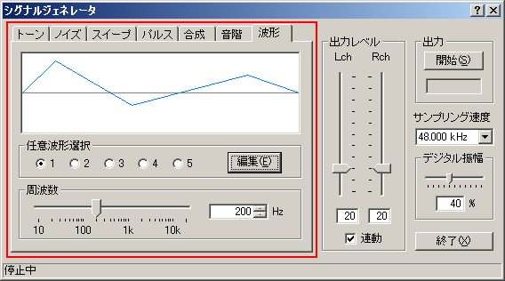
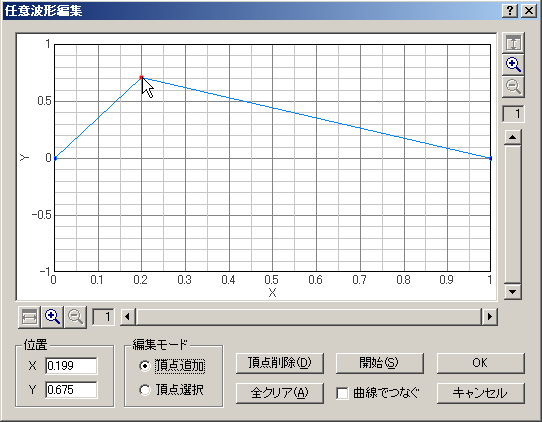

DSSF3 > RA > リファレンス > シグナルジェネレータ

| 項目 | 説明 |
|---|---|
| 任意波形選択 | 保存した波形を選択します。最大5個まで保存可能です。 |
| 編集 | 波形を選択して[編集]ボタンをクリックすると、「任意波形編集」ウィンドウが開きます。 |
| 周波数 | 編集した波形を出力する周波数をスライダーまたは数値入力により設定します。 |

| 項目 | 説明 |
|---|---|
| 波形表示 |
編集する波形の一周期分を表示します。波形を代表させるための頂点の座標を設定し、それらの点を直線又は曲線で結ぶことで、任意の波形を編集します。
X軸は一周期分の相対時間、Y軸は振幅を表します。それぞれ最大512倍まで拡大表示可能です。 |
| 位置 | 選択されている頂点のX座標、Y座標を数値で表示します。 |
| 編集モード | 頂点追加：新しく頂点を追加する場合、このモードを選んで波形グラフ上をクリックします。 頂点選択：既存の頂点を選択する場合、このモードを選んで波形グラフ上の頂点（青い点）をクリックします。選択された頂点は赤い点で表示され、そのままマウスを移動させるか、X・Y座標を数値入力すると、頂点の位置を変更できます。 |
| 頂点削除 | 選択中の頂点を削除します。 |
| 全クリア | 全ての頂点を削除します。 |
| 開始 | 編集中の波形を信号として出力します。オシロスコープやFFTアナライザで波形を確認しながら編集する事が可能です。 |
| 曲線でつなぐ | 設定した頂点座標をスプライン曲線で補間して滑らかな曲線にします。 |
| OK | 編集した波形を保存します。 |
| キャンセル | 波形を保存せずに、このウィンドウを閉じます。 |
DSSF3 > RA > リファレンス > シグナルジェネレータ